Don Mateo Rodríguez
Caficultor de 3ª Generación • 58 años
Finca La Esperanza, Ciénaga (1.800 msnm)


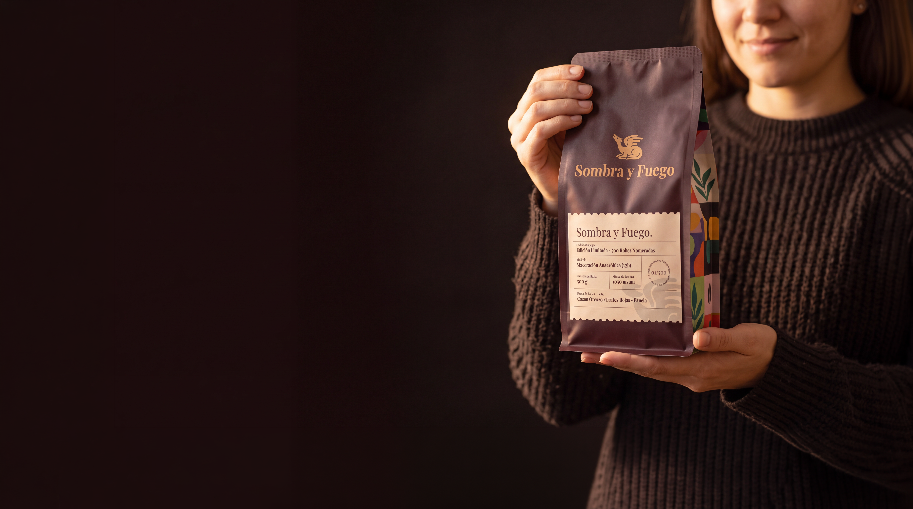
Tueste artesanal de alta montaña producido en la Sierra Nevada. Un perfil complejo con notas a cacao oscuro, frutos rojos y panela.
Asegurar mi Lote ↗
Caficultor de 3ª Generación • 58 años
Finca La Esperanza, Ciénaga (1.800 msnm)
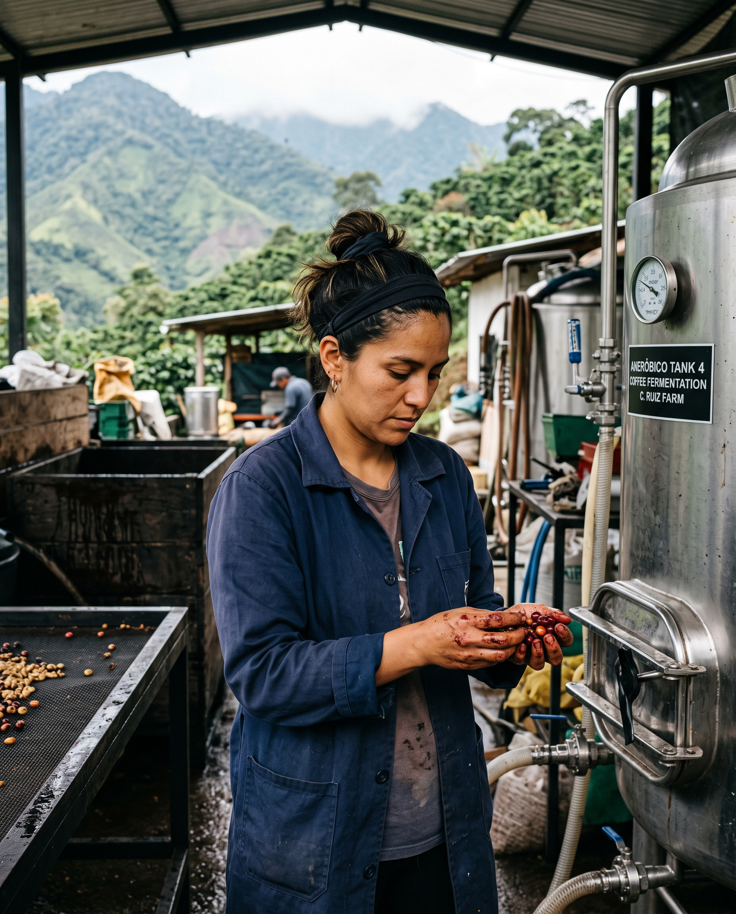
Especialista en Maceración Anaeróbica • 34 años
Finca San Rafael, Santa Marta (1.950 msnm)
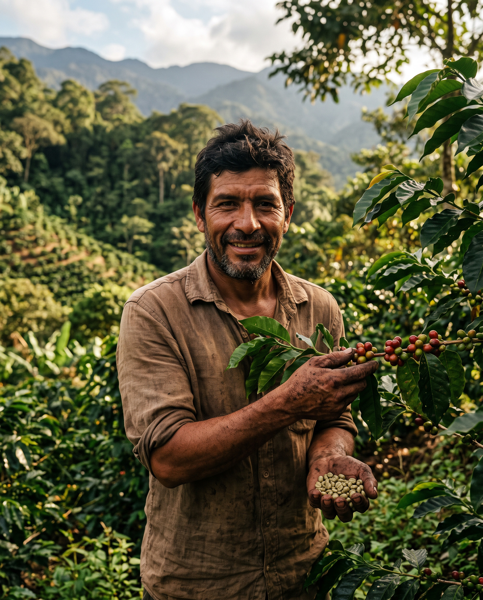
Maestro Tostador & Recolector • 42 años
Loma del Viento, Minca (1.700 msnm)
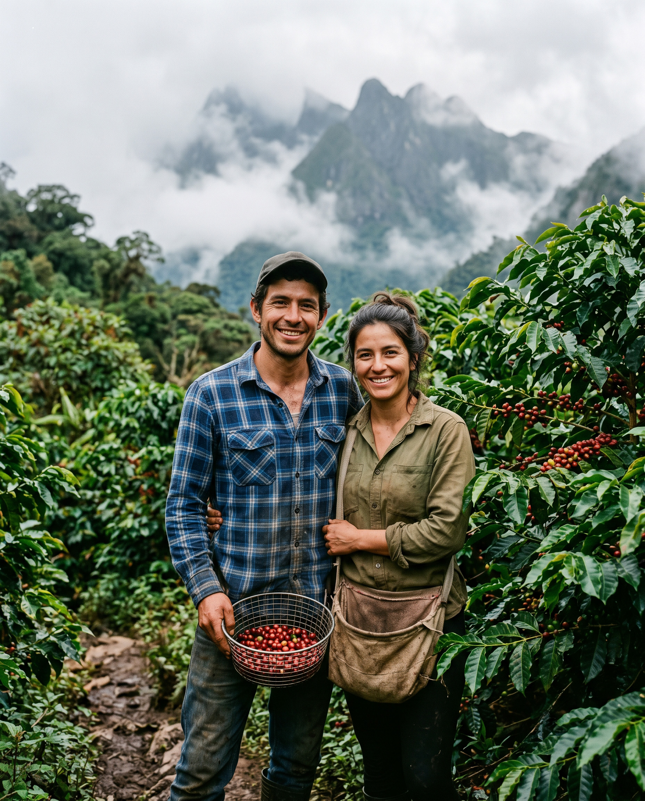
Conservacionistas & Caficultores • 29 y 31 años
Reserva El Silencio, Alta Sierra (2.100 msnm)
Detrás de cada grano hay historias de tradición, dedicación y respeto por el ecosistema de alta montaña.
Un balance perfecto entre la acidez brillante de la alta montaña y la dulzura profunda del tueste artesanal.
Cuerpo denso y sedoso con un final prolongado a chocolate de origen al 80%.
Notas ácidas y vibrantes a mora silvestre y cereza silvestre madurada al sol.
Melaza artesanal y azúcar moreno que equilibran la taza con una textura melosa.
Cosechado a extrema altura en la Sierra Nevada, ralentizando la maduración del grano.
Fermentación anaeróbica controlada en cereza que resalta la intensidad aromática.
Selecciona la presentación que mejor se adapte a tu ritual de extracción. Incluye certificado de autenticidad numerado.
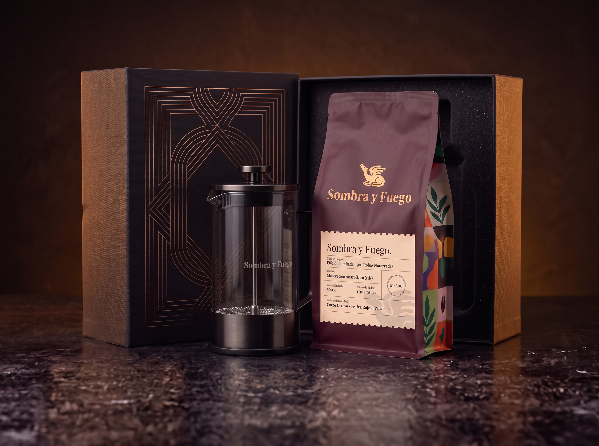
Bolsa de 500g de Café Sombra & Fuego + Prensa Francesa de émbolo en cristal y acero de edición especial.
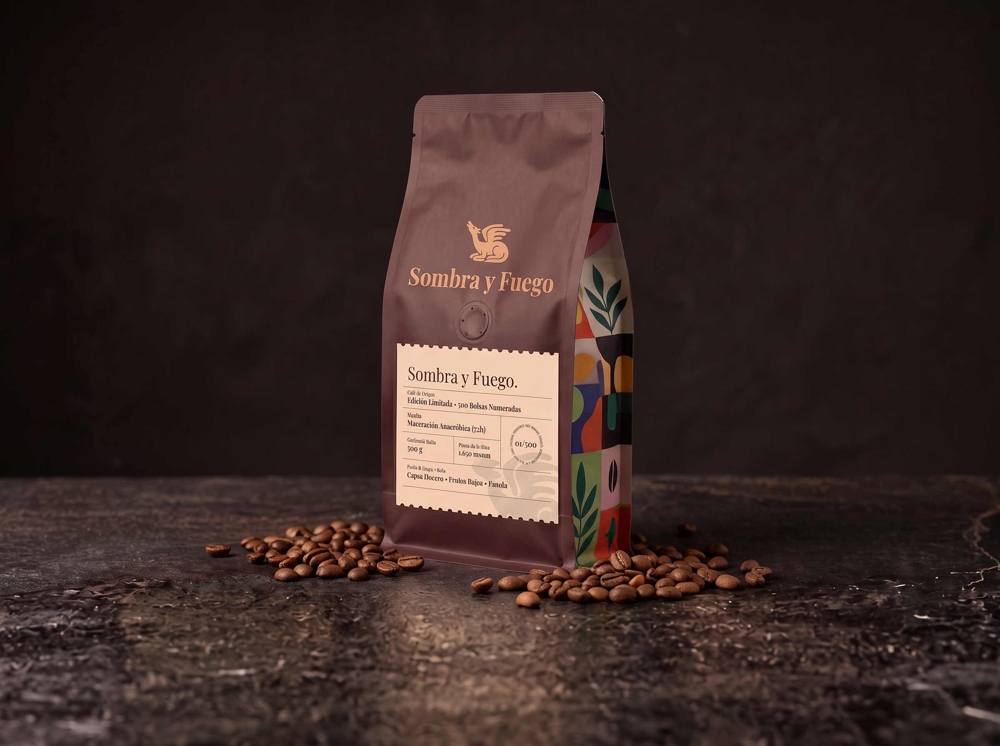
Café de origen único en empaque trilaminado con válvula de desgasificación y sellado hermético.
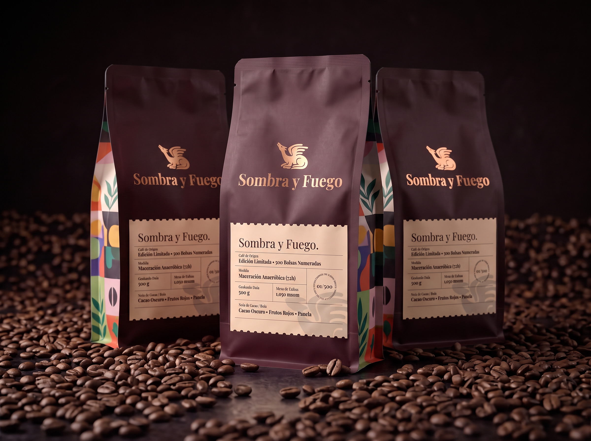
Tres bolsas de 500g numeradas consecutivamente. Ideal para amantes del café que buscan reserva continua.
Diseñamos guías térmicas y de molienda específicas para que recrees la taza perfecta según tu método favorito.
Ideal para acentuar el cuerpo denso, las notas de cacao oscuro y la textura melosa de la panela.
Resalta las notas brillantes de frutos rojos silvestres y una acidez limpia y equilibrada.
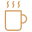
Una extracción de alta presión que concentra la dulzura caramelizada y produce una crema sostenida.
Explora nuestros artículos sobre botánica, tueste artesanal y guías de preparación diseñadas para elevar tu ritual diario.

Cómo el tamaño y la uniformidad de la partícula alteran la tasa de extracción en filtrados.
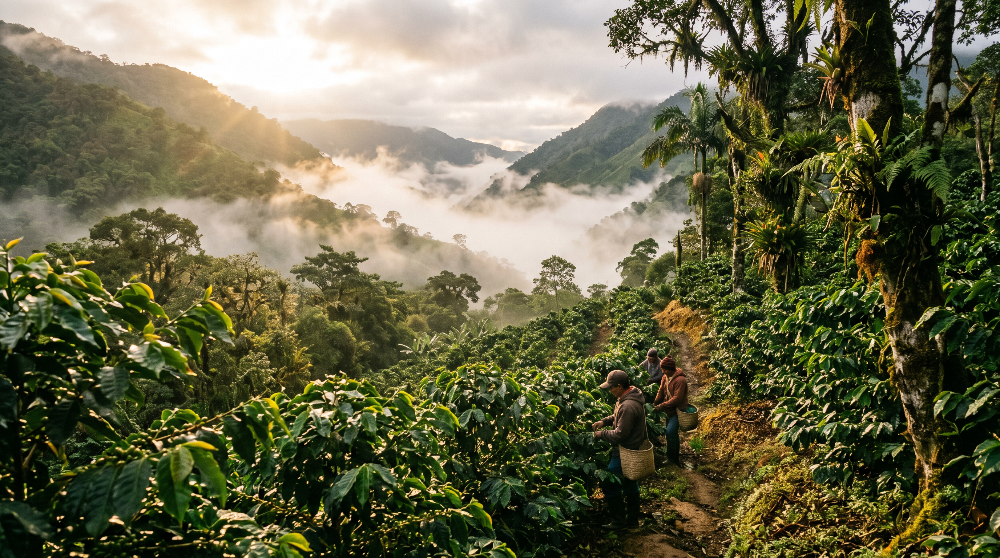
La relación directa entre la menor temperatura nocturna y la densidad del grano.
Mineralización, pH y temperatura ideal para no aplastar los compuestos aromáticos.
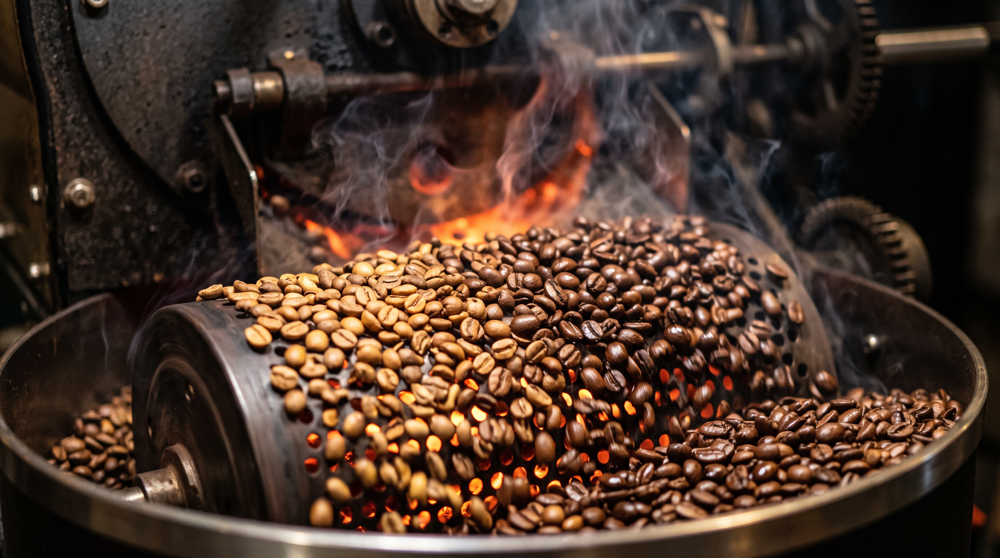
Un vistazo al desarrollo térmico que preserva las notas a fruto rojo sin desarrollar amargura.
Qué sucede químicamente durante las 72 horas de fermentación en tanque sellado.
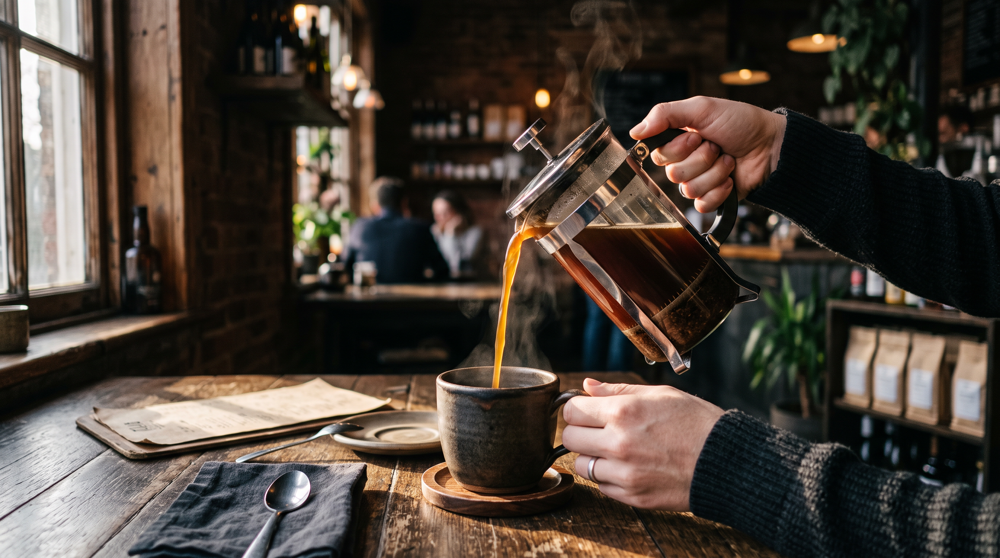
El método de decantado para obtener una taza limpia con todo el cuerpo del émbolo.

Por qué la válvula unidireccional es tu mejor aliada contra la oxidación del grano.
Accede a nuestra biblioteca completa de artículos, recetas y guías de cata.
Explorar todo el Blog ↗